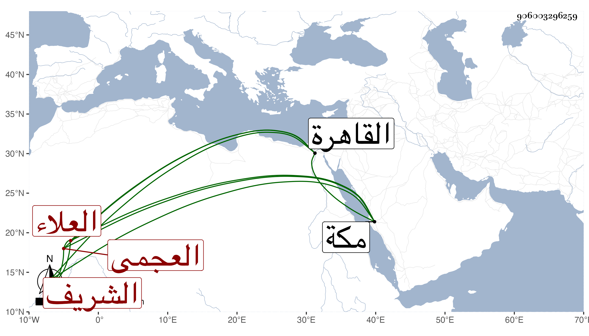

0902Sakhawi.DawLamic.ITO20230111-ara1.EIS1600.906003296259
Biography ID: 906003296259
428
محمد الشريف العلاء العجمى صاحب السرواني. أقام بعد موته بالقاهرة إلى أن توجه لمكة مع الركب فوعك ببركة الحاج واستمر يتزايد حتى مات في أثناء ذي القعدة سنة خمس وسبعين، وكان خيراً ذا سمت حسن ولحية نيرة. بيضاء مغتبطاً
